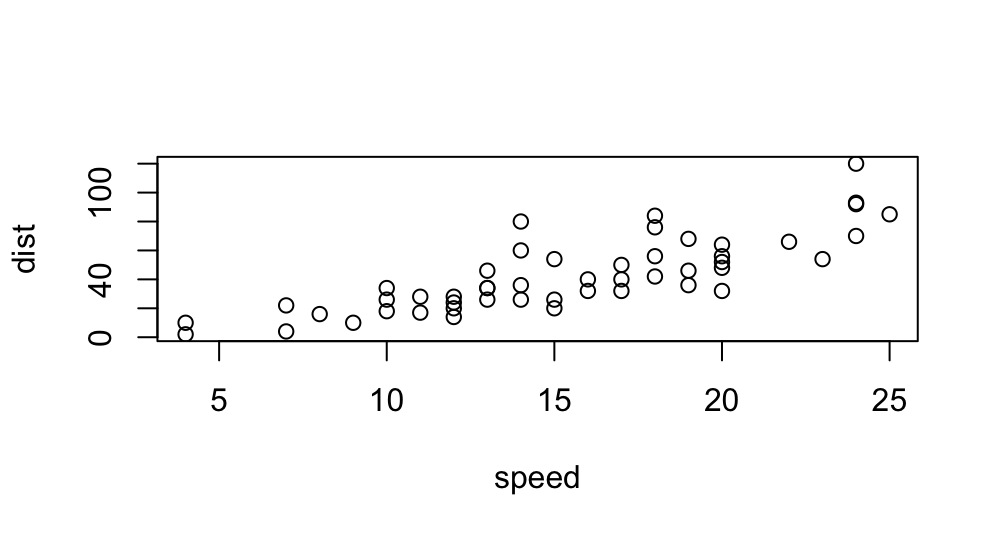
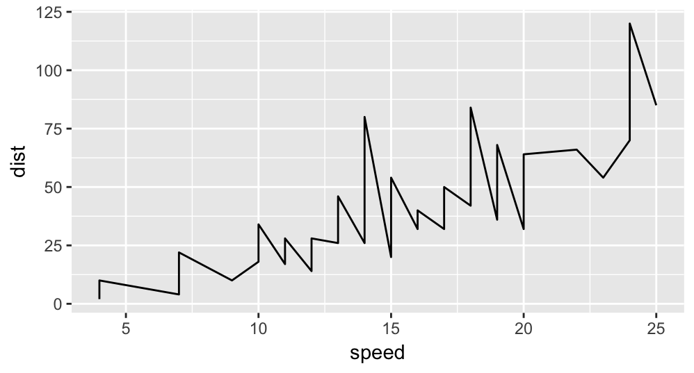
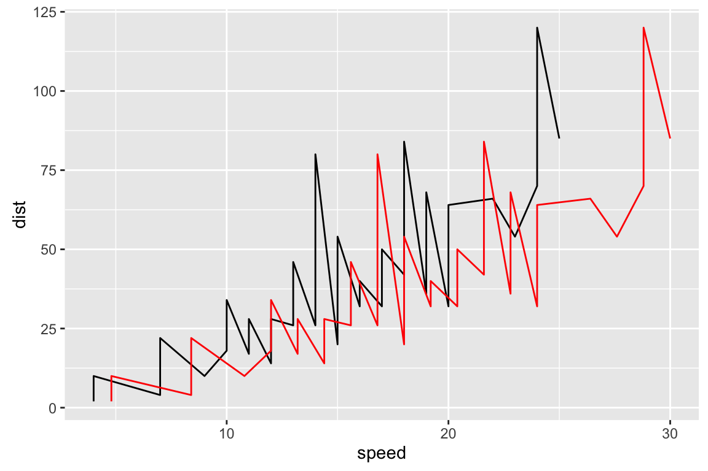
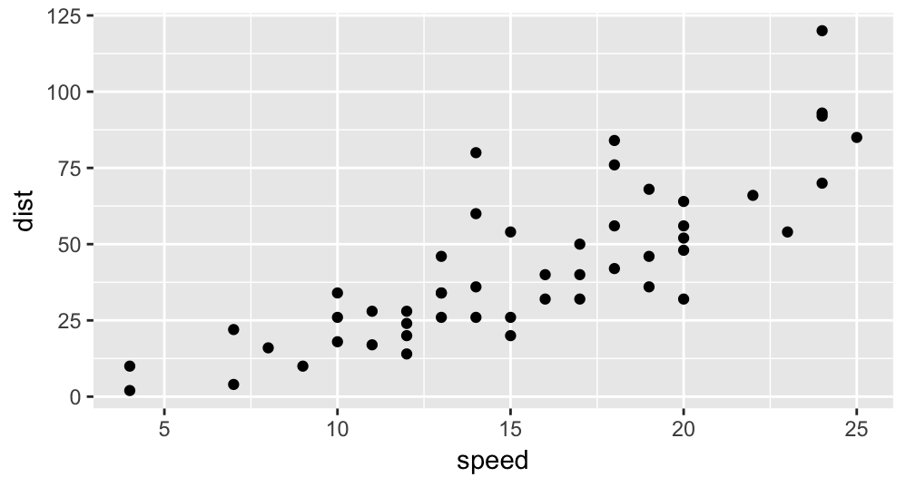
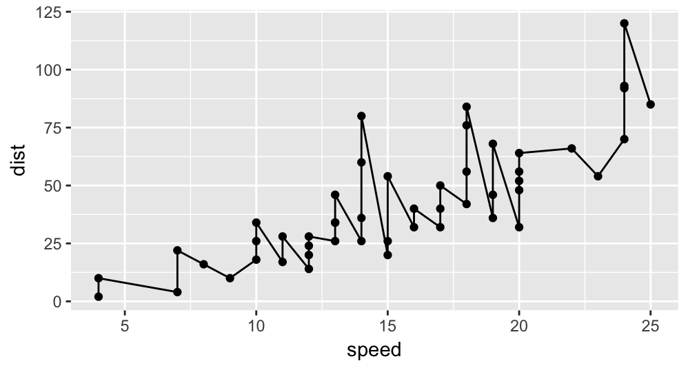
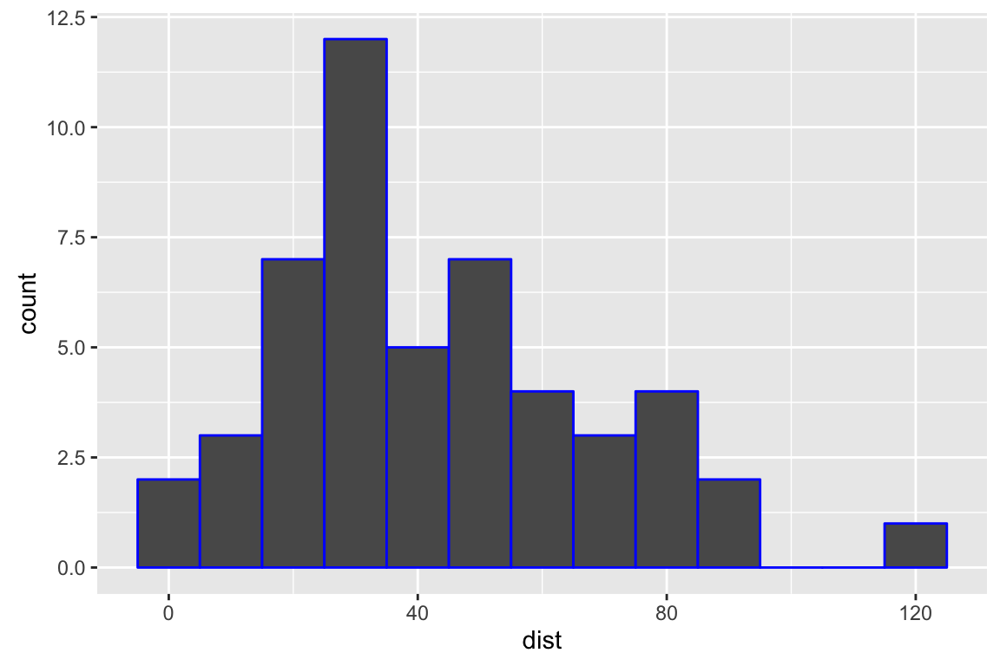
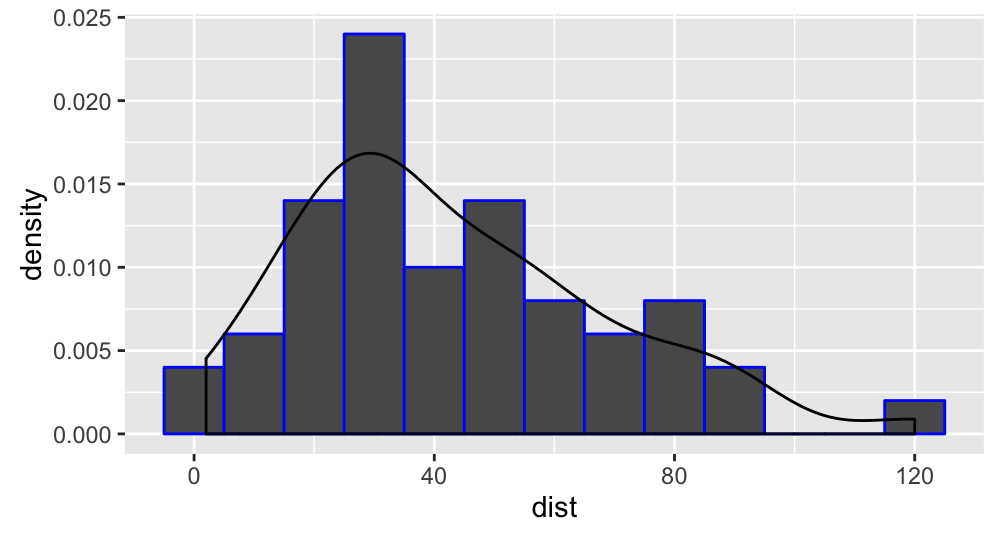
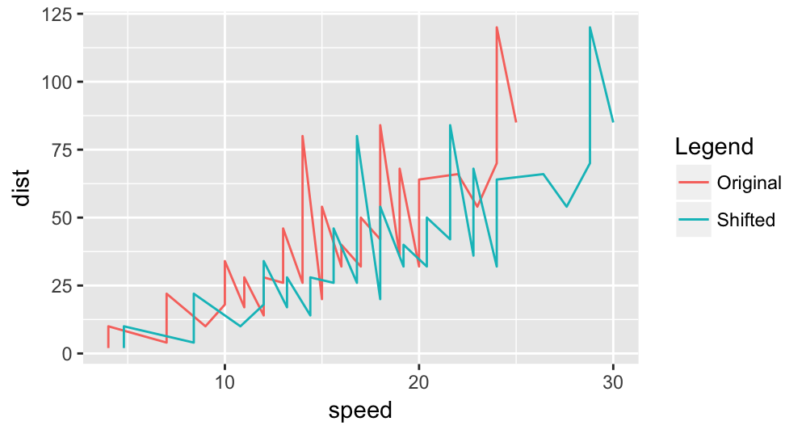
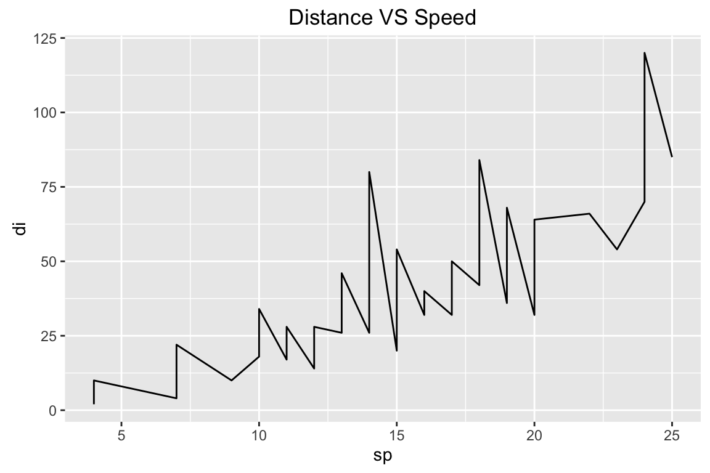
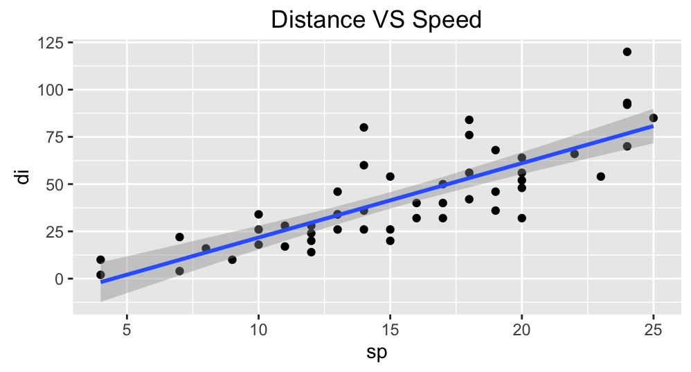

No matter what level of R Programmer you are, you likely struggle to remember every detail required by ggplot2. It has a steep learning curve compared to base R’s plotting functions, but once you learn to use it, it can produce production level graphics. This post will serve as a quick reference guide to ggplot2. The idea is that it can quickly give an example of the code and output for each type of plot you might need.
One might say, “R already makes nice graphics!” So, before we get started, let’s quickly compare ggplot vs base R with a simple scatter plot example. As you can see below, the plot created using a combination of ggplot’s quick plot function and plotly is clearly superior over base R.
plot(cars)
#Create a nice plot using "quick plot"
prettyPlot <- qplot(data=cars, x=speed, y=dist, geom="point")
#Make the plot interactive using ggplotly
ggplotly(prettyPlot)It’s time to get into the nitty gritty. Let’s learn to make a line graph using ggplot2. Here is the basic syntax.
ggplot(data=cars) +
geom_line(mapping = aes(x = speed, y = dist) )
Let’s break this down. It seems like a lot just to make a line graph, and it is, but let’s give ggplot2 the benefit of the doubt. What it lacks in wordiness, it makes up for in flexibility. Here is what is happening:
ggplot(data=cars) - The basic function for setting up the plot. Here, I define the data.frame that I will be pulling my data from using the data parameter. Cars is just a dataset that comes standard with R.
“+” - Yes, this little guy actually does something. One way to think about this is “adding” a geometry to your plot (like a line). Here is something that might clear this up.
geom - Really “geometry,” and is a common way to add elements to a ggplot graph. The geometry here is a line.
mapping - Where we define our aesthetics that get “mapped” to the line we are drawing.
aes() - The aesthetics function. This is where you add your x and y components. It can also add a number of other things, like color (or colour as Hadley the creator of ggplot2 would say). This can actually help with creating a legend, check that section for more information. Also, see this stackoverflow post for a complete list of default aesthetics that you can play with.
What if we wanted to add another line to the graph? Just add another line geometry! Easy!
ggplot(data=cars) +
geom_line(mapping = aes(x = speed, y = dist)) +
geom_line(mapping = aes(x = speed*1.2, y = dist) , color="red")
Notice how we add a color as a parameter to the geom_line() function. There are a few ways to add color, they are discussed in a later section.
To create a scatter plot, we do the following.
ggplot(data=cars) +
geom_point( mapping = aes(x = speed, y = dist) )
As you are hopefully beginning to see, the basic structure of ggplot graphics are the same, we just change the geometries that get created.
Let’s add a line to this scatter plot, and highlight a key feature.
ggplot(data=cars, mapping = aes(x = speed, y = dist)) +
geom_point() +
geom_line()
Notice here that the aesthetics are mapped once inside of the original call to ggplot(). It does not matter where you put the mapping, and this saves us from typing it in each geometry. This all works because each geometry has a parameter called “inherit.aes” which is automatically set to true.
A basic histogram is simple. The bin width defaults to 30. I would encourage you to explore other sizes.
ggplot(data=cars) +
geom_histogram(mapping = aes(x = dist), binwidth = 10, color="blue")
What if we want to create a histogram and overlay a kernel density on top of it? Notice that this might be a bit of a challenge, considering that the y values are counts, but the kernel density function has y values in terms of much smaller density terms. Luckily, if you set the y value of the histogram to “..density..”, it works exactly as we would want.
ggplot(data=cars) +
geom_histogram(mapping = aes(x = dist, y = ..density..), binwidth = 10, color="blue") +
geom_density(mapping = aes(x = dist))
Remember when we had two lines on the same graph? What if we wanted to display a legend that would allow the user to differentiate between them? One odd way to accomplish this is actually through the colour parameter inside the aes function. Let’s take a look.
ggplot(data=cars) +
geom_line(mapping = aes(x = speed, y = dist, colour = "Original")) +
geom_line(mapping = aes(x = speed*1.2, y = dist, colour="Shifted") ) +
labs(colour="Legend")
IMPORTANT: This example brings up an important nuance if you are working with legends this way. The “colour” parameter goes inside the aes function, and maps the title of the line (Original / Shifted) to the color of the line, where the color is chosen for you by ggplot. The “color” parameter gets sent to the geom_line function, and if you try to use this in combination with “colour”, it will override all plots on the graph to that “color.”
The labs function tacked on at the end allows us to change the title of the legend from “colour” to “Legend.” It can also be used to change the x and y axis titles using “x=” or “y=” as parameters.
For a more in depth analysis of legends, see this page.
As nice as it is to have complete flexibility over my graphs, sometimes I just need to create a really quick graph. Luckily, qplot does just that.
qplot(x = speed, y = dist, data = cars, geom = "line", main = c("Distance VS Speed"), xlab = "sp", ylab = "di")
qplot is nice because it gives you a number of the important options for formating, all in one function.
A quick switch of the geom and you get a scatter plot. You can add other geometries onto the qplot (like this useful linear regression line and standard error range), but you cannot add a second qplot.
qplot(x = speed, y = dist, data = cars, geom = "point", main = c("Distance VS Speed"), xlab = "sp", ylab = "di") +
geom_smooth(method = "lm")
qplot is great if you just have one plot of data that you want to look at. If you want to overlay multiple line graphs, density plots, etc, it works better to use the standard format of ggplot.